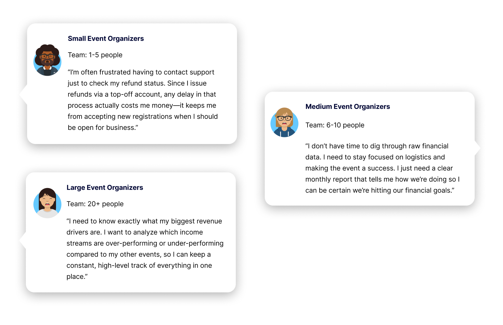
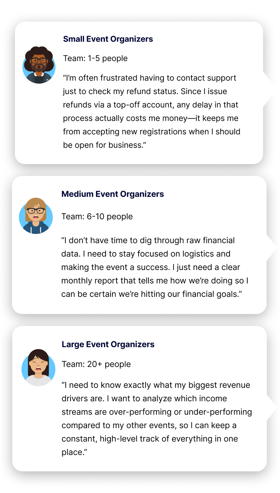

Restoring Financial Trust: Optimizing Payment Reporting for a Global Market
High-Level Impact
Reduced Support Friction: Successfully decreased the volume of financial clarification tickets by delivering a self-serve interface that allows organizers to navigate complex transaction data without external assistance.
Universal Data Accessibility: Established a versatile search and filtering system that empowers all organizers—from small teams to elite enterprises—to isolate the exact financial data they need.
Unified Source of Truth: Replaced fragmented 3rd-party reporting with a native system capable of managing multi-source transactions and diverse receipt types in one high-fidelity view.
Strategic Objective
To resolve widespread user frustration regarding financial data transparency. The objective was to overhaul the reporting architecture to eliminate information asymmetry—the gap between backend transaction logic and the user's understanding of their funds. By prioritizing semantic clarity and robust searchability, the project aimed to transition from a fragmented process to a high-trust, versatile reporting engine ensuring every organizer can verify their capital movement with absolute certainty.
The Challenge: Building on Legacy
Unlike a greenfield project, this initiative required improving a pre-existing report. This presented a unique set of difficulties: navigating legacy technical debt, maintaining consistency with existing data structures, and evolving the UI without disrupting the mental models of long-term users. The goal was to transform a rigid, confusing table into a flexible tool that could handle the complexity of global financial data.
Understanding the Audience: A Tiered Painpoint Matrix
| User Segment | Primary Painpoint | Strategic Requirement |
|---|---|---|
| Small Event Organizers (1–5 people) | Limited liquid capital; need to know exactly who has refunded to understand net cash flow impacts. | Instant visibility into individual refund statuses to manage daily capital. |
| Medium Event Organizers | High capacity but low time for manual tracking; need to monitor inflow vs. outflow. | A versatile summary view to assess financial health at a glance across date ranges. |
| Large/Elite Event Organizers | Managing thousands of participants; losing track of complex financial states. | Powerful granular filtering to isolate specific payment types and participant groups efficiently. |


Design Logic: Strategic Column Hierarchy
With a 3-week turnaround, adding layers of tooltips or tutorials was not a viable solution. Instead, I focused on Information Architecture and Semantic Clarity.
Rearranging & Rewording: I collaborated with Finance and the PM to optimize the report's layout and terminology. We rearranged the data hierarchy to prioritize high-impact information and replaced vague legacy labels—such as "Report Data"—with the more functional "Transaction Source." This refined structure makes the report self-explanatory and reduces the expertise barrier for all users.
Data Mapping: Translated complex backend transaction states into user-friendly UI labels, ensuring that "where the money is" was never a matter of interpretation.


The Solution: A Versatile Reporting Engine
1. Multidimensional Filtering:
Introduced a sophisticated filter suite that allows users to isolate data by Payment Type, Date Range, Confirmation No., Transaction Source, and Receipt Type.
2. Collapsible Filter Architecture:
Designed collapsible filter sections to manage information density, maintaining a clean workspace for high-level monitoring while keeping granular parameters accessible for deep-dive reconciliation.
3. Advanced Search:
The engine allows for immediate lookup by amount or participant personal information, significantly reducing the time spent hunting for specific transactions across massive datasets.
4. Integrated Refund Visibility:
Organizers can now track exactly who has refunded, providing a clear picture of how refunds impact their overall event revenue.
5. High-Integrity Exports:
A streamlined export function ensures that the data viewed on-screen matches the organizer's local records perfectly.
Reflection & Lessons Learned
- Optimizing Legacy Systems: Improving a pre-existing tool requires a balance of innovation and restraint — identifying the highest-impact friction points (search and clarity) and solving them within the existing framework.
- The Impact of Precise Language: In B2B SaaS design—especially when handling financial data—the choice of a single word can be as impactful as a full workflow. Correct labeling eliminated the need for external guidance and significantly reduced the support load. While this project lived in the sports-tech space, these principles of data clarity are directly applicable to the broader Fintech industry.
- Scalability through Versatility: By designing a flexible filter engine rather than static dashboards, we created a tool that feels bespoke for a small organizer while remaining powerful enough for an elite team.